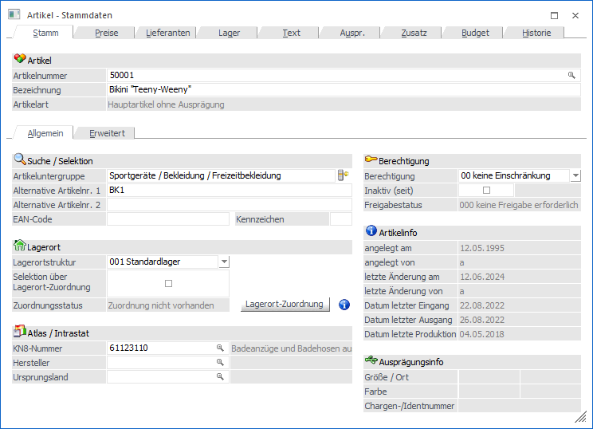
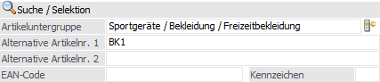
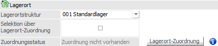
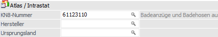
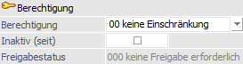
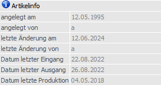
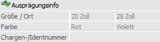

Artikel - Register "Stamm" - Unterregister "Allgemein"
In dem Unterregister "Allgemein" können u.a. die Daten für die Bereiche "Suche / Selektion", "Lagerort" und "Atlas / Intrastat" hinterlegt werden.

Folgende Eingabefelder, Einstellungen und Informationen stehen zur Verfügung:
Suche / Selektion

Ø Artikeluntergruppe
Hier kann die Artikeluntergruppe des Artikels per Autovervollständigung oder Matchcode angegeben werden. Die Untergruppen können aus bis zu 5 Ebenen bestehen, wobei in jeder Ebene 99.999 Einträge möglich sind.
Die Artikeluntergruppe dient in der weiteren Folge als Selektionskriterium und kann zusätzlich für die Preisberechnung genutzt werden.
Ø Alternative Artikelnr. 1 / Alternative Artikelnr. 2
In diese Felder können zwei weitere Artikelnummern pro Artikel eingeben.
Erklärung
Die Identifikation der Artikel erfolgt in WinLine FAKT üblicherweise über die "Artikelnummer". Ist die Artikelnummer nicht bekannt, kann nach dem Artikel über den Matchcode gesucht werden. Dabei stehen eine Reihe von Informationen als Suchbegriffe zur Verfügung (Bezeichnung, Artikeltexte, Artikelgruppe, etc.). Das Ziel der Suche ist es aber immer, die "Artikelnummer" zu finden.
Die "Alternative Artikelnummern" erlauben es, den Artikel direkt - ohne den Umweg des Matchcodes zu nutzen - auch über alternative Kennzeichen anzusprechen.
Beispiel
Die Artikelnummer lautet "4711". Unter dieser Artikelnummer wird der Artikel in Katalogen und Preislisten geführt und diese Nummer wird auch auf den Belegen angedruckt. Im Belegerfassen wird diese Artikelnummer vom Sachbearbeiter direkt oder über den Matchcode eingegeben.
Der Lieferant, von welchem die Ware bezogen wird, führt den Artikel unter der Nummer "0815", wobei diese Nummer auch als Strichcode auf dem Artikel angebracht ist. Im Lager sollen bei der Eingangserfassung dieser Strichcode mittels Lesegerät automatisch, ohne Verwendung des Matchcodes, erfasst werden. Die Zubuchung soll später unter der Nummer "4711" erfolgen. Es ist daher notwendig, für den Artikel "4711", eine alternative Artikelnummer mit "0815" zu hinterlegen (nähere Informationen entnehmen Sie bitte dem Kapitel "Alternative Artikelnummern").
Ø EAN-Code
In dem Feld "EAN-Code" kann ein 20stelliger, alphanumerischer Code, z.B. für Verwaltung des EAN-Codes des Artikels, eingetragen werden.
Ø Kennzeichen
An dieser Stelle kann ein beliebiges, einstelliges Kennzeichen, hinterlegt werden, welches in Auswertungen als Selektionskriterium herangezogen werden kann.
Lagerort

In diesem Bereich können die Grundeinstellungen für das WinLine LAGERMANAGEMENT definiert werden. Hierbei ist zu beachten, dass die Hinterlegung einer Lagerortstruktur für alle danach folgenden Einstellungen vorausgesetzt wird.
Ø Lagerortstruktur
An dieser Stelle kann dem Artikel eine Lagerortstruktur zugewiesen werden, wodurch die Lagerorte des WinLine LAGERMANAGEMENTs aktiviert werden.
Ø Selektion über Lagerort-Zuordnung
Mit Hilfe dieser Option kann definiert werden, ob die Hinterlegungen in der Lagerorte - Zuordnung als Selektion (Option aktiviert) oder als Sortierkriterium (Option deaktiviert) genutzt werden sollen.
Hinweis
Wurde die Option "Selektion über Lagerort-Zuordnung" aktiviert, so kann der Standardlagerort des Artikels in der Belegerfassung zur automatischen Lagerortaufteilung herangezogen werden. Hierbei ist u.a. darauf zu achten, dass immer eine Zuordnung für den Artikel existiert.
Eine detaillierte Beschreibung der Voraussetzungen bzw. Arbeitsabläufe kann dem Kapitel "Belegerfassung - Register "Mitte" - Automatische Lagerortaufteilung" entnommen werden.
Ø Zuordnungsstatus
An dieser Stelle wird dargestellt, ob Lagerort-Zuordnungen vorhanden sind oder nicht.
Ø Lagerort-Zuordnung
Durch Anwahl des Buttons "Lagerort-Zuordnung" wird der Artikel zwischengespeichert und das Programm "Lagerorte - Zuordnung" (eingegrenzt auf den Artikel und dessen Artikeluntergruppe) geöffnet.
Ø  Zuordnungsinformation
Zuordnungsinformation
Mit Hilfe des Buttons "Zuordnungsinformation" wird eine Übersicht der Lagerort-Zuordnungen und der daraus resultierenden Lagerorte am Bildschirm ausgegeben.
Atlas / Intrastat

Ø KN8-Nummer
Hierbei handelt es sich um die vorgeschriebene Artikelnummer laut Warenkatalog für die statistische Meldung (Intrastat).
Hinweis
Die vorgeschriebenen Warenbezeichnungen und Warennummern, sowie die besondere Maßeinheit, kann im "KN8 Warenkatalog" (WinLine FAKT - Stammdaten) hinterlegt werden (nähere Informationen entnehmen Sie bitte dem Kapitel KN8 Warenkatalog).
Ø Hersteller
Im Feld "Hersteller" kann ein "gültiges" Personenkonto (kann sowohl ein Debitoren- als auch ein Kreditorenkonto sein) eingetragen werden, welches den Artikel näher definiert. Über die Matchcodefunktion kann dabei nach allen angelegten Personenkonten gesucht werden.
Ø Ursprungsland
Hier kann das Ursprungsland des Artikels eingetragen werden. Bei der Intrastatausgabe für Eingänge wird dieses Ursprungsland anstelle des Versandlandes aus der Faktura belegt. Damit ist es möglich, dass bei gleichem Versandland (Land lt. Lieferadresse des Beleges), aber verschiedenen Ursprungsländern, der Artikel mehrere Zeilen in der Intrastat angezeigt werden.
Ø Ursprungsregion (nur für deutsche Mandanten)
Hier kann die Ursprungsregion des Artikels für die Intrastatausgabe für Eingänge hinterlegt werden. Es stehen die folgenden Einträge zur Verfügung:
ü lt. Intrastatstamm (WinLine FAKT - Stammdaten - Funktionscodes - Einstellungen)
ü alle Bundesländer
ü Ausland
Berechtigung

In diesem Bereich können Berechtigungs-Einstellung getroffen werden.
Ø Berechtigung
Für jeden Artikelstammsatz kann ein Berechtigungsprofil vergeben werden. Wenn der Anwender einen Artikel aufruft, wird geprüft, ob der Anwender einer Benutzergruppe zugeordnet wurde, welche in dem jeweiligen Profil enthalten ist und ob somit eine Bearbeitung erlaubt wäre (nähere Informationen entnehmen Sie bitte dem WinLine ADMIN - Handbuch).
Hinweis
Benutzern des Typs "Administrator" oder mit der Administratorenberechtigung "Benutzeradministrator" steht in der Auswahlbox der Punkt ">> Neues Profil" zur Verfügung. Über die Anwahl dieses Eintrags kann in der Folge ein neues Berechtigungsprofil angelegt werden.
Ø Inaktiv (seit)
Durch Aktivierung der Option kann der Artikel im Zuge der Reorganisation gelöscht werden. Des Weiteren können inaktive Artikel an diversen Stelle in der WinLine von der Anzeige ausgenommen werden.
Hinweis
Beim Reorganisieren werden nur jene Artikel gelöscht, bei denen folgende Voraussetzungen erfüllt sind:
ü inaktiv gesetzt
ü keine Lagerjournalzeilen
ü Stammwerte = 0
ü keine Einträge in den Artikelperioden für die aktuelle Periode
Hinweis
Bei Hauptartikel mit Ausprägungen erfolgt eine Abfrage, ob auch alle Ausprägungen inaktiv gesetzt werden sollen.
Ø Freigabestatus
An dieser Stelle wird der aktuelle Freigabestatus des Artikels angezeigt.
Artikelinfo

In diesem Bereich werden diverse Informationen zu dem ausgewählten Artikel angezeigt.
Ø angelegt am / angelegt von / letzte Änderung am / letzte Änderung von
In diesen Feldern wird das Datum bzw. das Login des Benutzers der Artikelanlage, sowie der letzten Änderung, protokolliert.
Ø Datum letzter Eingang / Datum letzter Ausgang
In diesen Feldern wird das Datum des letzten Lagerzugangs bzw. -abgangs angezeigt.
Ø Datum letzte Produktion
In diesem Feld wird das Datum der letzten Lagerbuchung geschrieben, welche mit Buchungsschlüssel "P" erfolgte (z.B. Lagerabgänge in der Lagerbuchhaltung, Komponentenbuchungen von Stücklisten, usw.).
Ausprägungsinfo

In diesem Bereich werden die Hauptinformationen bezüglich Ausprägungen angezeigt. Das Editieren dieser Daten kann bei einem Hauptartikel mit Ausprägungen bzw. einem Ausprägungsartikel im Unterregister "Erweitert" erfolgen.
Ø Ausprägung 1 (hier "Größe / Ort") / Ausprägung 2 (hier "Farbe")
Bei "Hauptartikeln mit Ausprägungen" werden an dieser Stelle die definierten Ausprägungsbereiche angezeigt. Handelt es sich hingegen um einen Ausprägungsartikel, so wird die zugeordnete Ausprägung dargestellt.
Ø Chargen-/Identnummer
An dieser Stelle wird bei Ausprägungsartikeln der Art "Charge", "Identnummer" oder "FIFO / LIFO" die aktuelle Chargen- oder Seriennummer angezeigt.